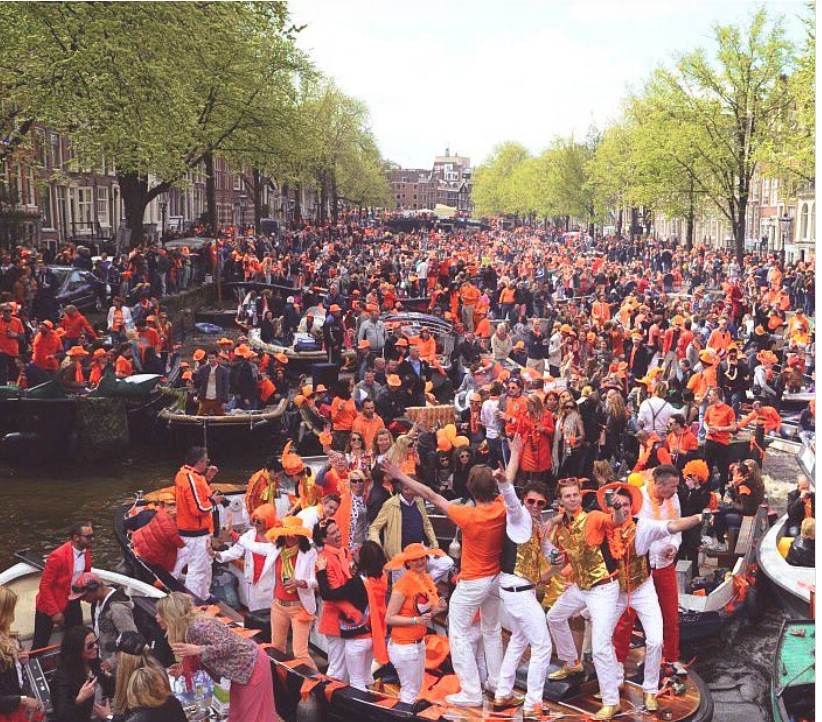
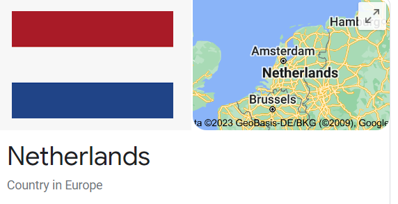

What Dutch national holiday takes place on April 27th?
Answer: King's Day


#8 on 11 April Festivals around the world. This Dutch national holiday pays tribute to
King Willem-Alexander on his birthday, a tradition that dates back to the late 19th century.
Amsterdam pretty much becomes a three-day party! Locals sport orange in honor of ruling family,
the House of Orange-Nassau, and take to the streets-and the canals-for parades and celebrations as
well as to snack on tompouce, a local pastry. This year's festivities take place April 26 - 29.